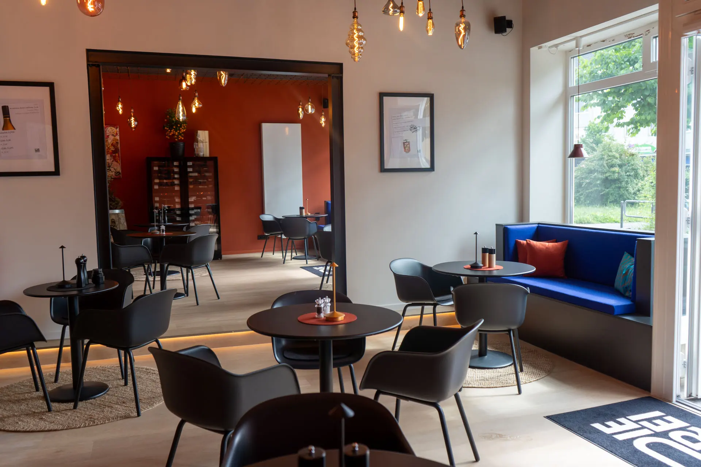
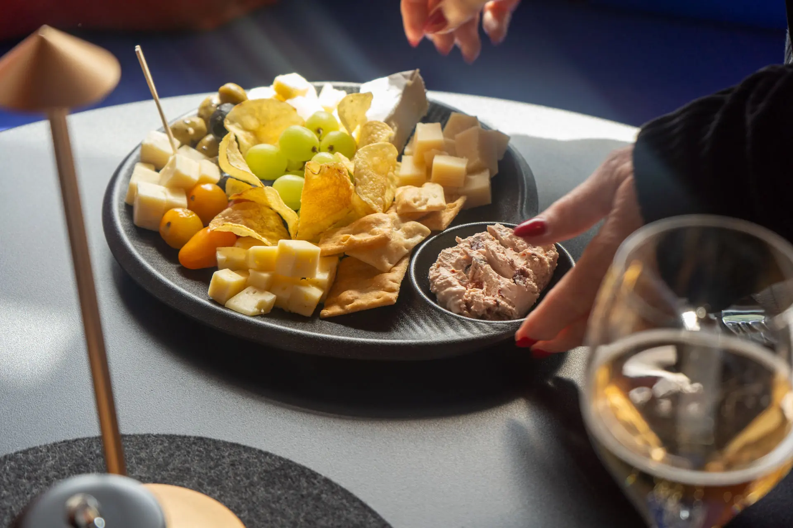
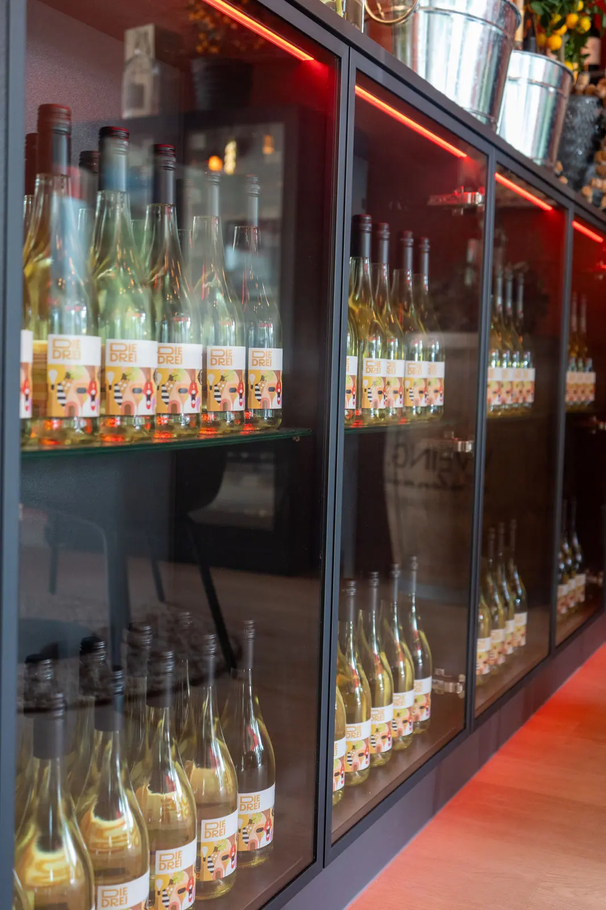
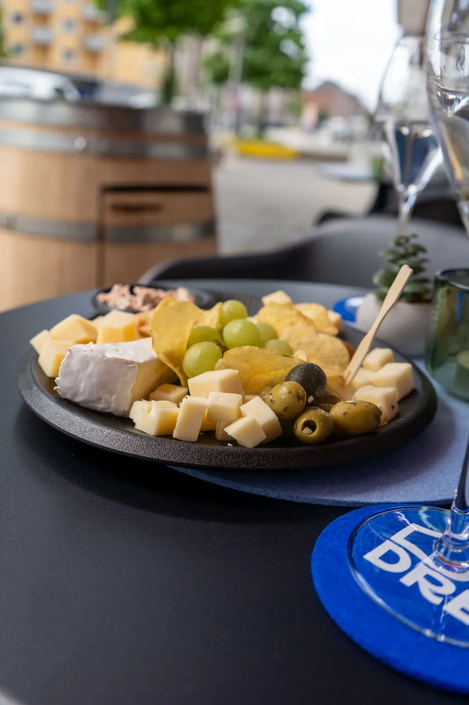

Die Bar
Einladend, gemütlich und unvergesslich: gemütliche Räume, stimmungsvolle Musik und eine liebevolle Einrichtung.
Die Bar entdecken
Willkommen
Falstaff Weinangebot 44/50 Punkte
Herzlich willkommen bei DIE DREI, Deiner Weinbar in Kiel. Tauche ein in ein Ambiente, das zum Verweilen einlädt, und entdecke unsere sorgfältig zusammengestellte Weinkarte.
Bei uns erlebst Du die Vielfalt des Weins – von klassischen Rebsorten bis zu verborgenen Schätzen kleiner Winzer. Jeder Schluck spiegelt sein Terroir und die Leidenschaft der Winzer wider. Lass Dich auf eine Reise durch die Welt der Weine mitnehmen.
Dein Team von DIE DREI Wo Wein und Kultur zusammenfließen.
Bei uns
Ein langer Tag, der ausklingen darf, oder ein besonderer Abend mit Freunden – bei uns steht der Genuss im Vordergrund.

Einladend, gemütlich und unvergesslich: gemütliche Räume, stimmungsvolle Musik und eine liebevolle Einrichtung.
Die Bar entdecken
Von Klassikern bis zu verborgenen Schätzen – sorgfältig ausgewählt von unserem erfahrenen Sommelier, im Glas oder als Flasche.
Zur Weinkarte
Für den kleinen Hunger: Käse allerlei mit Brot und Dip, Flammkuchen und mehr – genau das Richtige zum Wein.
Zur BrotzeitWeißwein, Rotwein, Roséwein, Champagner, Prosecco
Er erzählt Geschichten, weckt Erinnerungen und lädt zum Träumen ein.
Stimmen
Auszüge aus Google-Rezensionen.
Was für eine absolut gelungene Location! Sowas habe ich bisher in Kiel nicht erleben dürfen. Sehr geschmackvoll eingerichtetes Ambiente, was einen schon beim Betreten der Bar zum längeren Verweilen animiert.
Sehr schönes Ambiente, freundliches Personal, leckere Kleinigkeiten und eine wirklich nette Chefin. Wir kommen gerne wieder!
Sehr schöner Abend mit Freunden in der neuen Weinbar, tolles Weinangebot zu fairen Preisen.
Wir hatten einen schönen Abend mit Freunden. Endlich ein neuer Laden in Kiel … mal anders!
Wir sind noch am Antesten als Ex-SOTO Stammgast, gute und große Weinauswahl, angenehme und modernes Ambiente, sehr freundlich, kleine Snackauswahl, wir kommen wieder.
Öffnungszeiten
Telefonische Reservierung
Ein gemütlicher Abend mit Deinen Liebsten – oder eine größere Feier?
Dann freuen wir uns auf Deine telefonische Reservierung.
0431 / 71978976DIE DREI Weinbar Kiel
Knooper Weg 189 · 24118 Kiel